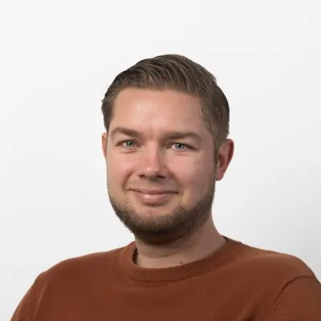

About me
I work where UX, product and organisation meet.
I'm a bridge builder between users, stakeholders and development teams. I combine UX strategy, service design and product thinking with hands-on design, validation and implementation, and feel most at home in organisations where many people and systems come together, and a good design choice is felt directly in someone's working day.
I live in Schiedam and I'm sociable, analytical and goal-driven. Outside work I've been a group leader at Scouting Allart van Heemstede since 2007, and I enjoy inline skating, running, the gym, hiking and travel. I also play guitar.
How I work
Understand
Map users, processes and goals before I design.
Structure
Turn complexity into flows and information architecture.
Design and validate
Iterate from concept to prototype, tested with users.
Scale
Design systems and WCAG so it stays consistent.
Design and development
How I work with development
A design is only finished when it can be built. I involve developers from the first sketch and hand over designs with annotations that specify what happens at each interaction: which state a button is in, what opens and closes, and when a step is done.
In Figma I only mark a screen ready for development once every state and exception is worked out. That way nobody has to guess, and conversations are about choices instead of details.
Experience
The full overview is in my CV.
- Sep 2026 – presentANVASenior UX and product designerANVA 6, the new cloud platform for the insurance chain. Hybrid from Amersfoort and Utrecht.
- Mar 2025 – Sep 2026ElastIQ-ConnectSenior UX and product designer · secondmentAssignments at NS and Enexis, among others.
- Oct 2025 – Sep 2026EnexisSenior UX and product designerSmall-consumer team: internal platforms for connections and usage data. Active in the UX guild.
- Mar – Oct 2025Nederlandse SpoorwegenSenior UX and product designerNext version of the developer portal.
- Apr 2023 – Apr 2025Onderlinge 's-GravenhageSenior UX and product designer · product ownerCustomer portal and internal tools redesign, design system and WCAG AA.
- Apr 2023 – Apr 2025WoonzSenior UX and product designer (lead), in parallelAccessible search and journeys for housing with care.
- Nov 2021 – Apr 2023AttenzaSenior UX and product designerApps and workflows for palliative home care.
- Dec 2020 – Nov 2021ProCCUX designerLabour registration and dashboards in greenhouse horticulture.
- Feb – Dec 2020AnywhereNowUX designerContact centre products and reporting, integrated with Microsoft Teams and Dynamics.
- Sep 2014 – Feb 2020ASolutions HealthcareUX designerAccessible healthcare applications and websites.
Early experience: aNewSpring (UX graduation project) and Drecomm / Youwe (design internship).
Expertise and tools
Education
BSc Communication and Multimedia Design
Rotterdam University of Applied Sciences · 2009 – 2013
Foundation year Graphic Media Technology
Rotterdam University of Applied Sciences · 2008 – 2009
Certifications and courses
- Professional Scrum Master I (PSM I)2024
- Professional Scrum Product Owner I (PSPO I)2022
Volunteering
Group leader · Scouting Allart van Heemstede
2007 – present. Organising activities and leading a team of volunteers.
Languages
Dutch, native
English, professional
Work together
Looking for a senior designer for your team?
I'm open to talking about a role where product design, design systems and accessibility come together. An email or LinkedIn message is all it takes.